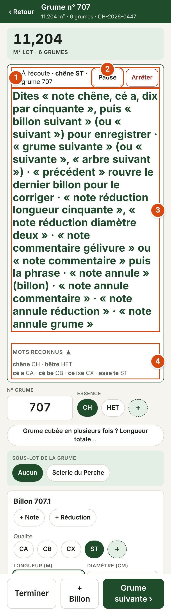
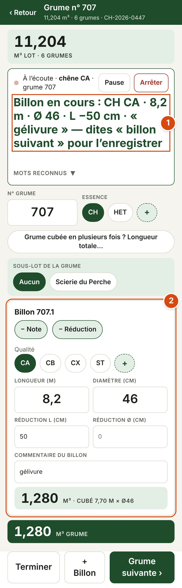
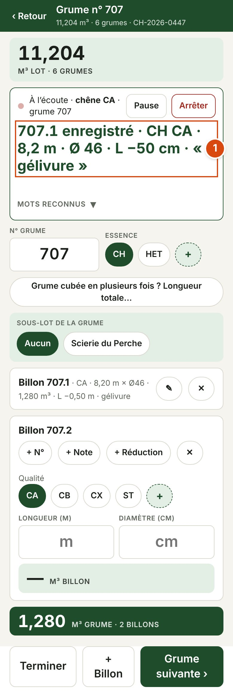
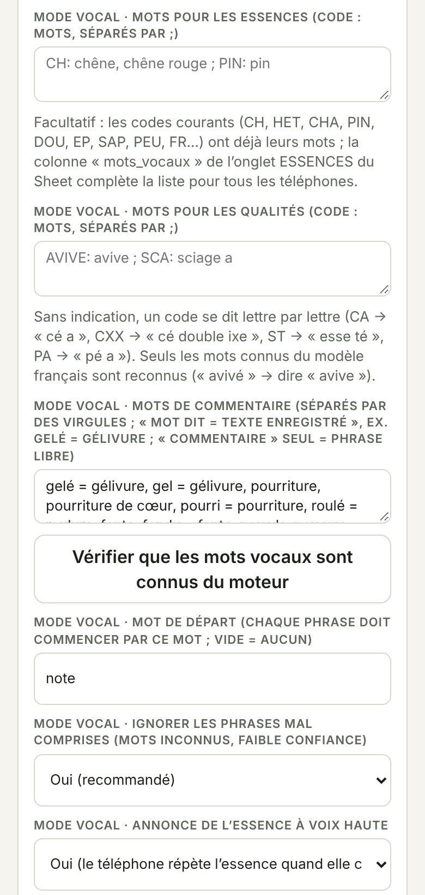

Cubage SBF · Mode d'emploi des commandes vocales
Cubage bord de route · Estimation sur pied · Application version 118 · 10 novembre 2026
Le mode vocal permet de cuber et d'inventorier sans toucher l'écran : on dicte, le téléphone remplit, on vérifie d'un coup d'œil, on enregistre à la voix. Il fonctionne sans réseau et aucun son ne quitte le téléphone. Une carte aide-mémoire à imprimer se trouve en dernière page.
 |
|
| Ce que vous entendez | Signification |
|---|---|
| Bip aigu | Compris (la valeur est à l'écran) |
| Bip grave | Pas compris ou refusé : rien n'a changé, redites la phrase |
| Le téléphone parle | Il relit ce qui vient d'être enregistré (« cé a, huit mètres vingt, quarante-six ») ou annonce l'essence quand elle change |
| 1 | Chaque phrase commence par « note ». Tout ce qui ne commence pas par « note » est ignoré : vous pouvez parler avec le bûcheron sans rien enregistrer. Exceptions, dites seules : « suivant », « billon suivant », « grume suivante », « suivante », « arbre suivant », « précédent », « terminé ». |
| 2 | En cubage et en pied à pied, la phrase remplit, « suivant » enregistre. Le billon (ou l'arbre) dicté reste « en cours » tant qu'on n'a pas dit « suivant ». En pointage par classes, chaque phrase compte une tige aussitôt. |
| 3 | Ordre : essence, qualité, longueur, diamètre (en cubage). Ce qui n'est pas redit est repris du billon précédent : souvent, « note huit vingt par quarante-deux » suffit. |
| 4 | Un œil sur l'écran, une oreille sur le bip. En cas de doute, corrigez un seul champ (« note diamètre quarante-huit ») plutôt que de tout redicter. |
Dites les nombres comme d'habitude. Les longueurs sont en mètres, les diamètres en centimètres. « par » sépare la longueur du diamètre.
| Vous dites | Valeur |
|---|---|
| « dix » | Longueur 10 m |
| « huit vingt » | 8,20 m |
| « huit et demi » | 8,50 m |
| « huit virgule vingt-cinq » | 8,25 m |
| « douze cinquante » · « un cinquante » | 12,50 m · 1,50 m |
| « quarante-et-un » · « soixante-et-onze » · « quatre-vingt-dix-neuf » · « cent cinq » | Diamètre 41 · 71 · 99 · 105 cm (dites-les normalement) |
| « note huit vingt par quarante-deux » | 8,20 m × Ø 42 |
| « note quatre trente-cinq » (sans « par ») | 4 m × Ø 35 : sans « par », le dernier nombre est le diamètre |
| Vous dites | Qualité |
|---|---|
| « cé a » · « cé bé » · « cé ixe » · « cé double ixe » | CA · CB · CX · CXX |
| « esse té » · « pé a » · « pé bé » | ST · PA · PB |
| « bé a » | BA |
| « avive » | Avivé (le mot « avivé » n'existe pas pour le moteur) |
| # | Vous dites | Ce qui se passe |
|---|---|---|
| 1 | « note chêne, cé a, huit vingt par quarante-six » | Billon en cours : CH, CA, 8,20 m, Ø 46 (rien d'enregistré) |
| 2 | « note réduction longueur cinquante » | Réfaction de 50 cm sur la longueur |
| 3 | « note commentaire gelé » | Commentaire « gélivure » |
| 4 | « billon suivant » | Billon 707.1 enregistré, relu à voix haute ; le billon 707.2 s'ouvre |
| 5 | « note cé bé, six par quarante » | Billon en cours : CB, 6 m, Ø 40 (essence reprise) |
| 6 | « grume suivante » | Billon 707.2 enregistré, grume 707 close, grume 708 ouverte |
 |  |
|
| Vous dites | L'application fait |
|---|---|
| Dicter un billon | |
| « note chêne, cé a, dix par cinquante » | Billon en cours : essence, qualité, longueur, diamètre |
| « note huit vingt par quarante-deux » | Longueur et diamètre ; essence et qualité reprises |
| « note cé bé, quatre et demi par quarante-quatre » | Qualité, longueur et diamètre ; essence reprise |
| « note quarante-six » | Diamètre seul (pratique avec la longueur fixe du lot) |
| « note diamètre quarante-huit » · « note longueur neuf » | Corrige un seul champ du billon en cours |
| « note réduction longueur cinquante » · « note réduction diamètre deux » | Réfaction en cm sur la longueur / le diamètre |
| « note commentaire gelé » | Commentaire (voir 6) |
| Enregistrer et naviguer (sans « note ») | |
| « billon suivant » ou « suivant » | Enregistre le billon et ouvre le suivant de la même grume |
| « grume suivante », « suivante » ou « arbre suivant » | Enregistre le billon en cours, clôt la grume, passe au n° suivant |
| « précédent » | Rouvre le dernier billon enregistré pour le corriger, puis « suivant » |
| « terminé » | Quitte la saisie ; refusé tant qu'un billon est en cours |
| Annuler | |
| « note annule » | Efface le billon en cours ; s'il est vide, retire le dernier billon enregistré |
| « note annule commentaire » · « note annule réduction » | Retire le commentaire / la réduction du billon en cours |
| « note annule grume » | Vide la grume en cours ; si elle est déjà vide, rouvre la grume précédente |
| Divers | |
| « note numéro cent douze » | N° de la grume en cours : 112 |
| « note longueur totale douze » (ou « note origine douze ») | Seulement pour une grume cubée en plusieurs fois : suit le reste à cuber (facultatif, jamais dans le cas courant) |
| « note chute deux » | Abandonne 2 m de cette grume en chute |
| « note pause » / « note reprise » | Suspend / reprend l'écoute |
Toujours « note commentaire » suivi du mot (version 118) : « note commentaire gelé ». Un mot de commentaire dit sans « commentaire » est ignoré (bip grave), pour éviter qu'un mot mal entendu (« courbé » au lieu de « cé bé ») finisse dans le commentaire.
Certains mots du métier sont inconnus du moteur de reconnaissance : on dit un mot proche et l'application écrit le terme exact.
| Dites « note commentaire … » | Commentaire enregistré |
|---|---|
| « gelé, gel » | gélivure |
| « pourri » | pourriture |
| « roulé » | roulure |
| « fendu » | fente |
| « noueux » | nœuds |
| « échauffé » | échauffure |
| « mort » | bois mort |
| « sec » | bois sec |
| « piqué » | piqûres |
| « gourmand » | gourmands |
| « insecte » | insectes |
| « double » | double cœur |
| « résine » | poche de résine |
| Dits tels quels | pourriture, pourriture de cœur, fente, nœuds, courbure, fourche, aubier, creux, mitraille, éclaté, cassé, tordu, cannelure, gouttière, chancre, trou, blessure, cicatrice, fissure, tache, champignon, bois de réserve, brûlé, sain |
Liste par défaut de la version 118, modifiable dans Paramètres › Mode vocal (forme « mot dit = texte enregistré »).
Ici, chaque phrase compte une tige aussitôt : pas de « suivant ».
| Vous dites | L'application fait |
|---|---|
| « note chêne quarante » | Une tige de chêne en classe 40 |
| « note trente-cinq » | Une tige en classe 35, essence conservée |
| « note hêtre » | Change l'essence sans compter (le téléphone l'annonce) |
| « note tarif onze » | Tarif Chaudé 11 pour l'essence en cours (1 à 20) |
| « note annule » | Retire la dernière tige |
| « terminé » | Quitte la saisie |
Dites la valeur de la classe (pas de 5 cm par défaut : 20, 25, 30…) : un diamètre hors classe (« trente-trois ») est refusé (bip grave).
 |
|
Même principe que le cubage : l'arbre se remplit, puis « suivant » l'enregistre. Ordre : essence, diamètre à 1,30 m, « par », hauteur.
| Vous dites | L'application fait |
|---|---|
| « note chêne quarante-cinq par seize » | Arbre en cours : CH, Ø 45 cm, hauteur 16 m |
| « note hauteur dix-huit virgule cinq » · « note diamètre cinquante » | Corrige un seul champ |
| « note tarif dix » | Tarif Chaudé 10 |
| « note tronçon six cé a » (ou « note cé a six ») | Tronçon de 6 m en CA, à la suite des précédents (du bas vers le haut) |
| « note tronçon quatre » puis « note cé bé » | Tronçon de 4 m, qualité donnée juste après |
| « note annule tronçon » | Retire le dernier tronçon |
| « suivant » (sans « note ») | Enregistre l'arbre ; le téléphone annonce son n° et le suivant |
| « précédent » | Rouvre le dernier arbre enregistré |
| « note annule » · « note annule arbre » | Efface l'arbre en cours · supprime le dernier arbre enregistré |
| « note numéro trois cents » | N° de l'arbre en cours : 300 |
| « terminé » | Quitte la saisie ; refusé tant qu'un arbre est en cours |
Le reste de la tige au-dessus des tronçons est compté en « BI ».
 |
|
 |
|
| Situation | Que faire |
|---|---|
| Rien ne se passe | La phrase commence-t-elle par « note » ? Le point rouge clignote-t-il (pas en pause) ? Micro autorisé ? Rapprochez le téléphone. |
| Billon dicté absent du listing | Il n'a pas été enregistré : dites « billon suivant » (ou « grume suivante ») après chaque billon. |
| Bip grave sur une qualité | Qualité non cochée dans le lot : ajoutez-la (bouton +), ou dites-la lettre par lettre (« cé bé »). |
| « … ignoré : dites « commentaire … » » | Un mot de commentaire a été dit sans « commentaire » : redites « note commentaire … ». |
| « commentaire libre indisponible » | Le mot n'est pas dans la liste du téléphone : vérification du chapitre 9. |
| Une valeur fausse | Corrigez le champ (« note diamètre … », « note longueur … ») ou « note annule » et redictez ; déjà enregistré : « précédent ». |
| « saisie en cours : dites « suivant » ou « annule » avant « terminé » » | Un billon ou un arbre est entamé : enregistrez-le (« suivant ») ou effacez-le (« note annule »). |
| Le téléphone se met en veille | Réglez la mise en veille automatique sur 5 min ou plus pendant le cubage. |
| Beaucoup d'erreurs par vent ou près d'un engin | Oreillette ou micro Bluetooth ; « note pause » le temps du bruit. |
À imprimer et plastifier. Chaque phrase commence par « note », sauf les commandes en gras sans guillemets « note ».
Cubage bord de routenote chêne, cé a, dix par cinquante note huit vingt par quarante-deux note diamètre … · note longueur … note réduction longueur cinquante billon suivant → enregistre le billon note annule · note annule grume note numéro cent douze · note pause / note reprise Grume cubée en plusieurs fois seulement : note longueur totale douze · note chute deux |
Nombreshuit vingt = 8,20 · huit et demi = 8,50 Qualitéscé a CA · cé bé CB · cé ixe CX Commentairesgelé → gélivure · roulé → roulure Sur pied · classesnote chêne quarante (1 tige) · note trente-cinq Sur pied · pied à piednote chêne quarante-cinq par seize (Ø · H) |
Bip aigu = compris · bip grave = non compris, redire. Un billon (ou un arbre) n'est enregistré qu'avec « suivant ».